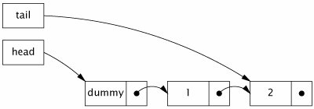
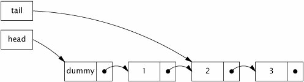
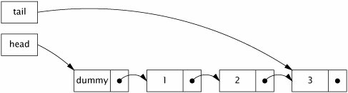

{% include JB/setup %}
{% raw %}
<div>


<a name="ch15lev1sec4" class="calibre18" id="ch15lev1sec4"></a>
<h3 id="title-IDAUUA1Z" class="docSection1Title">15.4. Nonblocking Algorithms</h3>
<p class="docText1">Lock-based algorithms are at risk for a number of liveness failures. If a thread holding a lock is delayed due to blocking I/O, page fault, or other delay, it is possible that no thread will make progress. An algorithm is called <span class="docEmphasis">nonblocking</span> if failure or suspension of any thread cannot cause failure or suspension of another thread; an algorithm is called <span class="docEmphasis">lock-free</span> if, at each step, <span class="docEmphasis">some</span> thread can make progress. Algorithms that use CAS exclusively for coordination between threads can, if constructed correctly, be both nonblocking and lock-free. An uncontended CAS always succeeds, and if multiple threads contend for a CAS, one always wins and therefore makes progress. Nonblocking algorithms are also immune to deadlock or priority inversion (though they can exhibit starvation or livelock because they can involve repeated retries). We've seen one nonblocking algorithm so far: <tt class="calibre25">CasCounter</tt>. Good nonblocking algorithms are known for many common data structures, including stacks, queues, priority queues, and hash tablesthough <a name="iddle2992" class="calibre18" id="iddle2992"></a><a name="iddle4359" class="calibre18" id="iddle4359"></a>designing new ones is a task best left to experts.</p>
<a name="ch15lev2sec6" class="calibre18" id="ch15lev2sec6"></a>
<h4 id="title-IDA4VA1Z" class="docSection2Title">15.4.1. A Nonblocking Stack</h4>
<p class="docText1">Nonblocking algorithms are considerably more complicated than their lock-based equivalents. The key to creating nonblocking algorithms is figuring out how to limit the scope of atomic changes to a <span class="docEmphasis">single</span> variable while maintaining data consistency. In linked collection classes such as queues, you can sometimes get away with expressing state transformations as changes to individual links and using an <tt class="calibre25">AtomicReference</tt> to represent each link that must be updated atomically.</p>
<p class="docText1">Stacks are the simplest linked data structure: each element refers to only one other element and each element is referred to by only one object reference. <tt class="calibre25">ConcurrentStack</tt> in <a class="calibre2" href="#ch15list06">Listing 15.6</a> shows how to construct a stack using atomic references. The stack is a linked list of <tt class="calibre25">Node</tt> elements, rooted at <tt class="calibre25">top</tt>, each of which contains a value and a link to the next element. The <tt class="calibre25">push</tt> method prepares a new link node whose <tt class="calibre25">next</tt> field refers to the current top of the stack, and then uses CAS to try to install it on the top of the stack. If the same node is still on the top of the stack as when we started, the CAS succeeds; if the top node has changed (because another thread has added or removed elements since we started), the CAS fails and <tt class="calibre25">push</tt> updates the new node based on the current stack state and tries again. In either case, the stack is still in a consistent state after the CAS.</p>
<p class="docText1"><tt class="calibre25">CasCounter</tt> and <tt class="calibre25">ConcurrentStack</tt> illustrate characteristics of all nonblocking algorithms: some work is done speculatively and may have to be redone. In <tt class="calibre25">ConcurrentStack</tt>, when we construct the <tt class="calibre25">Node</tt> representing the new element, we are hoping that the value of the <tt class="calibre25">next</tt> reference will still be correct by the time it is installed on the stack, but are prepared to retry in the event of contention.</p>
<p class="docText1">Nonblocking algorithms like <tt class="calibre25">ConcurrentStack</tt> derive their thread safety from the fact that, like locking, <tt class="calibre25">compareAndSet</tt> provides both atomicity and visibility guarantees. When a thread changes the state of the stack, it does so with a <tt class="calibre25">compareAndSet</tt>, which has the memory effects of a volatile write. When a thread examines the stack, it does so by calling <tt class="calibre25">get</tt> on the same <tt class="calibre25">AtomicReference</tt>, which has the memory effects of a volatile read. So any changes made by one thread are safely published to any other thread that examines the state of the list. And the list is modified with a <tt class="calibre25">compareAndSet</tt> that atomically either updates the <tt class="calibre25">top</tt> reference or fails if it detects interference from another thread.</p>
<a name="ch15lev2sec7" class="calibre18" id="ch15lev2sec7"></a>
<h4 id="title-IDAEYA1Z" class="docSection2Title">15.4.2. A Nonblocking Linked List</h4>
<p class="docText1">The two nonblocking algorithms we've seen so far, the counter and the stack, illustrate the basic pattern of using CAS to update a value speculatively, retrying if the update fails. The trick to building nonblocking algorithms is to limit the scope of atomic changes to a single variable. With counters this is trivial, and with a stack it is straightforward enough, but for more complicated data structures such as queues, hash tables, or trees, it can get a lot trickier.</p>
<p class="docText1">A linked queue is more complicated than a stack because it must support fast access to both the head and the tail. To do this, it maintains separate head and tail pointers. Two pointers refer to the node at the tail: the <tt class="calibre25">next</tt> pointer of the current <a name="iddle1064" class="calibre18" id="iddle1064"></a><a name="iddle1065" class="calibre18" id="iddle1065"></a><a name="iddle2100" class="calibre18" id="iddle2100"></a><a name="iddle4973" class="calibre18" id="iddle4973"></a><a name="iddle1053" class="calibre18" id="iddle1053"></a><a name="iddle2991" class="calibre18" id="iddle2991"></a><a name="iddle3212" class="calibre18" id="iddle3212"></a>last element, and the tail pointer. To insert a new element successfully, both of these pointers must be updatedatomically. At first glance, this cannot be done with atomic variables; separate CAS operations are required to update the two pointers, and if the first succeeds but the second one fails the queue is left in an inconsistent state. And, even if both operations succeed, another thread could try to access the queue between the first and the second. Building a nonblocking algorithm for a linked queue requires a plan for both these situations.</p>
<a name="ch15list06" class="calibre18" id="ch15list06"></a><h5 id="title-IDA50A1Z" class="docExampleTitle">Listing 15.6. Nonblocking Stack Using Treiber's Algorithm (<a class="calibre2" href="bib01.html#biblio01_031">Treiber, 1986</a>).</h5><p class="calibre21"><table cellspacing="0" width="90%" border="1" cellpadding="5" class="calibre5"><tr class="calibre6"><td class="calibre28">
<pre class="calibre30">@ThreadSafe
public class ConcurrentStack &lt;E&gt; {
    AtomicReference&lt;Node&lt;E&gt;&gt; top = new AtomicReference&lt;Node&lt;E&gt;&gt;();

    public void push(E item) {
        Node&lt;E&gt; newHead = new Node&lt;E&gt;(item);
        Node&lt;E&gt; oldHead;
        do {
            oldHead = top.get();
            newHead.next = oldHead;
        } while (!top.compareAndSet(oldHead, newHead));
    }

    public E pop() {
        Node&lt;E&gt; oldHead;
        Node&lt;E&gt; newHead;
        do {
            oldHead = top.get();
            if (oldHead == null)
                return null;
            newHead = oldHead.next;
        } while (!top.compareAndSet(oldHead, newHead));
        return oldHead.item;
    }

    private static class Node &lt;E&gt; {
        public final E item;
        public Node&lt;E&gt; next;

        public Node(E item) {
            this.item = item;
        }
    }
}
</pre><br class="calibre11"/>
</td></tr></table></p>
<p class="docText1">We need several tricks to develop this plan. The first is to ensure that the data structure is always in a consistent state, even in the middle of an multi-step update. That way, if thread <span class="docEmphasis">A</span> is in the middle of a update when thread <span class="docEmphasis">B</span> arrives on the scene, <span class="docEmphasis">B</span> can tell that an operation has been partially completed and knows not to try immediately to apply its own update. Then <span class="docEmphasis">B</span> can wait (by repeatedly examining the queue state) until <span class="docEmphasis">A</span> finishes, so that the two don't get in each other's way.</p>
<p class="docText1">While this trick by itself would suffice to let threads "take turns" accessing the data structure without corrupting it, if one thread failed in the middle of an update, no thread would be able to access the queue at all. To make the algorithm nonblocking, we must ensure that the failure of a thread does not prevent other threads from making progress. Thus, the second trick is to make sure that if <span class="docEmphasis">B</span> arrives to find the data structure in the middle of an update by <span class="docEmphasis">A</span>, enough information is already embodied in the data structure for <span class="docEmphasis">B</span> to <span class="docEmphasis">finish the update for A</span>. If <span class="docEmphasis">B</span> "helps" <span class="docEmphasis">A</span> by finishing <span class="docEmphasis">A</span>'s operation, <span class="docEmphasis">B</span> can proceed with its own operation without waiting for <span class="docEmphasis">A</span>. When <span class="docEmphasis">A</span> gets around to finishing its operation, it will find that <span class="docEmphasis">B</span> already did the job for it.</p>
<p class="docText1"><tt class="calibre25">LinkedQueue</tt> in <a class="calibre2" href="#ch15list07">Listing 15.7</a> shows the insertion portion of the Michael-Scott nonblocking linked-queue algorithm (<a class="calibre2" href="bib01.html#biblio01_026">Michael and Scott, 1996</a>), which is used by <tt class="calibre25">ConcurrentLinkedQueue</tt>. As in many queue algorithms, an empty queue consists of a "sentinel" or "dummy" node, and the head and tail pointers are initialized to refer to the sentinel. The tail pointer always refers to the sentinel (if the queue is empty), the last element in the queue, or (in the case that an operation is in mid-update) the second-to-last element. <a class="calibre2" href="#ch15fig03">Figure 15.3</a> illustrates a queue with two elements in the normal, or <span class="docEmphasis">quiescent</span>, state.</p>
<a name="ch15fig03" class="calibre18" id="ch15fig03"></a><p class="calibre21"><div class="calibre12">
<h5 class="docExampleTitle">Figure 15.3. Queue with Two Elements in Quiescent State.</h5>
</div></p><p class="docText1">
</p>
<p class="calibre1"> </p>
<p class="docText1">Inserting a new element involves updating two pointers. The first links the new node to the end of the list by updating the <tt class="calibre25">next</tt> pointer of the current last element; the second swings the tail pointer around to point to the new last element. Between these two operations, the queue is in the <span class="docEmphasis">intermediate</span> state, shown in <a class="calibre2" href="#ch15fig04">Figure 15.4</a>. After the second update, the queue is again in the quiescent state, shown in <a class="calibre2" href="#ch15fig05">Figure 15.5</a>.</p>
<a name="ch15fig04" class="calibre18" id="ch15fig04"></a><p class="calibre21"><div class="calibre12">
<h5 class="docExampleTitle">Figure 15.4. Queue in Intermediate State During Insertion.</h5>
</div></p><p class="docText1">
</p>
<p class="calibre1"> </p>
<a name="ch15fig05" class="calibre18" id="ch15fig05"></a><p class="calibre21"><div class="calibre12">
<h5 class="docExampleTitle">Figure 15.5. Queue Again in Quiescent State After Insertion is Complete.</h5>
</div></p><p class="docText1">
</p>
<p class="calibre1"> </p>
<p class="docText1">The key observation that enables both of the required tricks is that if the queue is in the quiescent state, the <tt class="calibre25">next</tt> field of the link node pointed to by <tt class="calibre25">tail</tt> is null, and if it is in the intermediate state, <tt class="calibre25">tail.next</tt> is non-null. So any thread can immediately tell the state of the queue by examining <tt class="calibre25">tail.next</tt>. Further, if the queue is in the intermediate state, it can be restored to the quiescent state by advancing the tail pointer forward one node, finishing the operation for whichever thread is in the middle of inserting an element.<sup class="docFootnote"><a class="calibre2" href="#ch15fn07">[7]</a></sup></p><blockquote class="calibre19"><p class="docFootnote1"><sup class="calibre27"><a name="ch15fn07" class="calibre18" id="ch15fn07">[7]</a></sup> For a full account of the correctness of this algorithm, see (<a class="calibre2" href="bib01.html#biblio01_026">Michael and Scott, 1996</a>) or (<a class="calibre2" href="bib01.html#biblio01_017">Herlihy and Shavit, 2006</a>).</p></blockquote>
<p class="docText1"><tt class="calibre25">LinkedQueue.put</tt> first checks to see if the queue is in the intermediate state before attempting to insert a new element (step <span class="docEmphasis">A</span>). If it is, then some other thread is already in the process of inserting an element (between its steps <span class="docEmphasis">C</span> and <span class="docEmphasis">D</span>). Rather than wait for that thread to finish, the current thread helps it by finishing the operation for it, advancing the tail pointer (step <span class="docEmphasis">B</span>). It then repeats this check in case another thread has started inserting a new element, advancing the tail pointer until it finds the queue in the quiescent state so it can begin its own insertion.</p>
<p class="docText1">The CAS at step <span class="docEmphasis">C</span>, which links the new node at the tail of the queue, could fail if two threads try to insert an element at the same time. In that case, no harm is done: no changes have been made, and the current thread can just reload the tail pointer and try again. Once <span class="docEmphasis">C</span> succeeds, the insertion is considered to have <a name="iddle2129" class="calibre18" id="iddle2129"></a><a name="iddle1157" class="calibre18" id="iddle1157"></a><a name="iddle1176" class="calibre18" id="iddle1176"></a><a name="iddle1485" class="calibre18" id="iddle1485"></a><a name="iddle2338" class="calibre18" id="iddle2338"></a><a name="iddle2339" class="calibre18" id="iddle2339"></a><a name="iddle3823" class="calibre18" id="iddle3823"></a><a name="iddle3824" class="calibre18" id="iddle3824"></a><a name="iddle5015" class="calibre18" id="iddle5015"></a><a name="iddle5090" class="calibre18" id="iddle5090"></a><a name="iddle5091" class="calibre18" id="iddle5091"></a>taken effect; the second CAS (step <span class="docEmphasis">D</span>) is considered "cleanup", since it can be performed either by the inserting thread or by any other thread. If <span class="docEmphasis">D</span> fails, the inserting thread returns anyway rather than retrying the CAS, because no retry is neededanother thread has already finished the job in its step <span class="docEmphasis">B</span>! This works because before any thread tries to link a new node into the queue, it first checks to see if the queue needs cleaning up by checking if <tt class="calibre25">tail.next</tt> is non-null. If it is, it advances the tail pointer first (perhaps multiple times) until the queue is in the quiescent state.</p>
<a name="ch15list07" class="calibre18" id="ch15list07"></a><h5 id="title-IDACWT0Z" class="docExampleTitle">Listing 15.7. Insertion in the Michael-Scott Nonblocking Queue Algorithm (<a class="calibre2" href="bib01.html#biblio01_026">Michael and Scott, 1996</a>).</h5><p class="calibre21"><table cellspacing="0" width="90%" border="1" cellpadding="5" class="calibre5"><tr class="calibre6"><td class="calibre28">
<pre class="calibre30">@ThreadSafe
public class LinkedQueue &lt;E&gt; {
    private static class Node &lt;E&gt; {
        final E item;
        final AtomicReference&lt;Node&lt;E&gt;&gt; next;

        public Node(E item, Node&lt;E&gt; next) {
            this.item = item;
            this.next = new AtomicReference&lt;Node&lt;E&gt;&gt;(next);
        }
    }

    private final Node&lt;E&gt; dummy = new Node&lt;E&gt;(null, null);
    private final AtomicReference&lt;Node&lt;E&gt;&gt; head
            = new AtomicReference&lt;Node&lt;E&gt;&gt;(dummy);
    private final AtomicReference&lt;Node&lt;E&gt;&gt; tail
            = new AtomicReference&lt;Node&lt;E&gt;&gt;(dummy);

    public boolean put(E item) {
        Node&lt;E&gt; newNode = new Node&lt;E&gt;(item, null);
        while (true) {
            Node&lt;E&gt; curTail = tail.get();
            Node&lt;E&gt; tailNext = curTail.next.get();
            if (curTail == tail.get()) {
                if (tailNext != null) {                     
                    // <span class="docEmphasis">Queue in intermediate state, advance tail</span>
                    tail.compareAndSet(curTail, tailNext);   
                } else {
                    // <span class="docEmphasis">In quiescent state, try inserting new node</span>
                    if (curTail.next.compareAndSet(null, newNode)) { 
                        // <span class="docEmphasis">Insertion succeeded, try advancing tail</span>
                        tail.compareAndSet(curTail, newNode);        
                        return true;
                   }
                }
            }
        }
    }
}
</pre><br class="calibre11"/>
</td></tr></table></p>
<a name="ch15lev2sec8" class="calibre18" id="ch15lev2sec8"></a>
<h4 id="title-IDACYT0Z" class="docSection2Title">15.4.3. Atomic Field Updaters</h4>
<p class="docText1"><a class="calibre2" href="#ch15list07">Listing 15.7</a> illustrates the algorithm used by <tt class="calibre25">ConcurrentLinkedQueue</tt>, but the actual implementation is a bit different. Instead of representing each <tt class="calibre25">Node</tt> with an atomic reference, <tt class="calibre25">ConcurrentLinkedQueue</tt> uses an ordinary volatile reference and updates it through the reflection-based <tt class="calibre25">AtomicReferenceFieldUpdater</tt>, as shown in <a class="calibre2" href="#ch15list08">Listing 15.8</a>.</p>
<a name="ch15list08" class="calibre18" id="ch15list08"></a><h5 id="title-IDADZT0Z" class="docExampleTitle">Listing 15.8. Using Atomic Field Updaters in <tt class="calibre33">ConcurrentLinkedQueue</tt>.</h5><p class="calibre21"><table cellspacing="0" width="90%" border="1" cellpadding="5" class="calibre5"><tr class="calibre6"><td class="calibre28">
<pre class="calibre30">private class Node&lt;E&gt; {
    private final E item;
    private volatile Node&lt;E&gt; next;

    public Node(E item) {
        this.item = item;
    }
}

private static AtomicReferenceFieldUpdater&lt;Node, Node&gt; nextUpdater
        = AtomicReferenceFieldUpdater.newUpdater(
                Node.class, Node.class, "next");
</pre><br class="calibre11"/>
</td></tr></table></p>
<p class="docText1">The atomic field updater classes (available in <tt class="calibre25">Integer</tt>, <tt class="calibre25">Long</tt>, and <tt class="calibre25">Reference</tt> versions) represent a reflection-based "view" of an existing volatile field so that CAS can be used on existing volatile fields. The updater classes have no constructors; to create one, you call the <tt class="calibre25">newUpdater</tt> factory method, specifying the class and field name. The field updater classes are not tied to a specific instance; one can be used to update the target field for any instance of the target class. The atomicity guarantees for the updater classes are weaker than for the regular atomic classes because you cannot guarantee that the underlying fields will not be modified directlythe <tt class="calibre25">compareAndSet</tt> and arithmetic methods guarantee atomicity only with respect to other threads using the atomic field updater methods.</p>
<p class="docText1">In <tt class="calibre25">ConcurrentLinkedQueue</tt>, updates to the <tt class="calibre25">next</tt> field of a <tt class="calibre25">Node</tt> are applied using the <tt class="calibre25">compareAndSet</tt> method of <tt class="calibre25">nextUpdater</tt>. This somewhat circuitous approach is used entirely for performance reasons. For frequently allocated, short-lived objects like queue link nodes, eliminating the creation of an <tt class="calibre25">AtomicReference</tt> for each <tt class="calibre25">Node</tt> is significant enough to reduce the cost of insertion operations. <a name="iddle1003" class="calibre18" id="iddle1003"></a>However, in nearly all situations, ordinary atomic variables perform just finein only a few cases will the atomic field updaters be needed. (The atomic field updaters are also useful when you want to perform atomic updates while preserving the serialized form of an existing class.)</p>
<a name="ch15lev2sec9" class="calibre18" id="ch15lev2sec9"></a>
<h4 id="title-IDA30T0Z" class="docSection2Title">15.4.4. The ABA Problem</h4>
<p class="docText1">The <span class="docEmphasis">ABA problem</span> is an anomaly that can arise from the naive use of compare-and-swap in algorithms where nodes can be recycled (primarily in environments without garbage collection). A CAS effectively asks "Is the value of <span class="docEmphasis">V</span> still <span class="docEmphasis">A</span>?", and proceeds with the update if so. In most situations, including the examples presented in this chapter, this is entirely sufficient. However, sometimes we really want to ask "Has the value of <span class="docEmphasis">V</span> changed since I last observed it to be <span class="docEmphasis">A</span>?" For some algorithms, changing <span class="docEmphasis">V</span> from <span class="docEmphasis">A</span> to <span class="docEmphasis">B</span> and then back to <span class="docEmphasis">A</span> still counts as a change that requires us to retry some algorithmic step.</p>
<p class="docText1">This <span class="docEmphasis">ABA problem</span> can arise in algorithms that do their own memory management for link node objects. In this case, that the head of a list still refers to a previously observed node is not enough to imply that the contents of the list have not changed. If you cannot avoid the ABA problem by letting the garbage collector manage link nodes for you, there is still a relatively simple solution: instead of updating the value of a reference, update a <span class="docEmphasis">pair</span> of values, a reference and a version number. Even if the value changes from <span class="docEmphasis">A</span> to <span class="docEmphasis">B</span> and back to <span class="docEmphasis">A</span>, the version numbers will be different. <tt class="calibre25">AtomicStampedReference</tt> (and its cousin <tt class="calibre25">AtomicMarkableReference</tt>) provide atomic conditional update on a pair of variables. <tt class="calibre25">AtomicStampedReference</tt> updates an object reference-integer pair, allowing "versioned" references that are immune<sup class="docFootnote"><a class="calibre2" href="#ch15fn08">[8]</a></sup> to the ABA problem. Similarly, <tt class="calibre25">AtomicMarkableReference</tt> updates an object reference-boolean pair that is used by some algorithms to let a node remain in a list while being marked as deleted.<sup class="docFootnote"><a class="calibre2" href="#ch15fn09">[9]</a></sup></p><blockquote class="calibre19"><p class="docFootnote1"><sup class="calibre27"><a name="ch15fn08" class="calibre18" id="ch15fn08">[8]</a></sup> In practice, anyway; theoretically the counter could wrap.</p></blockquote><blockquote class="calibre19"><p class="docFootnote1"><sup class="calibre27"><a name="ch15fn09" class="calibre18" id="ch15fn09">[9]</a></sup> Many processors provide a double-wide CAS (CAS2 or CASX) operation that can operate on a pointer-integer pair, which would make this operation reasonably efficient. As of Java 6, <tt class="calibre35">Atomic-StampedReference</tt> does not use double-wide CAS even on platforms that support it. (Double-wide CAS differs from DCAS, which operates on two unrelated memory locations; as of this writing, no current processor implements DCAS.)</p></blockquote>

<p class="calibre1"> </p>

</div>

{% endraw %}

